一、搭建Fedora虚拟机 1. VMware安装可以参考博客 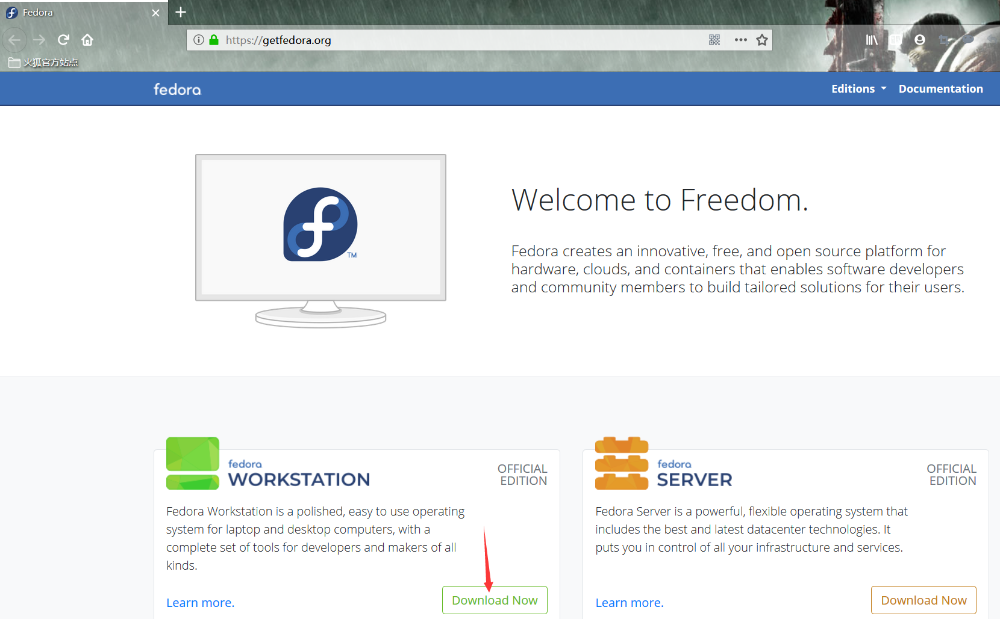
3. 下载ISO镜像用于VMware虚拟机的安装。 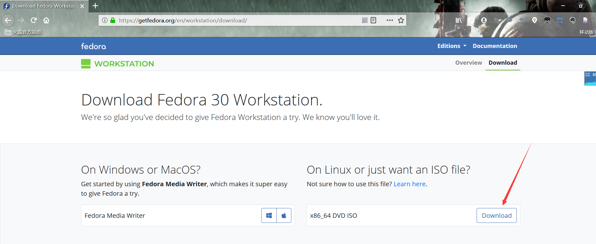
4. 打开VMware虚拟机，新建新的虚拟机。
5. 默认选择典型的配置。 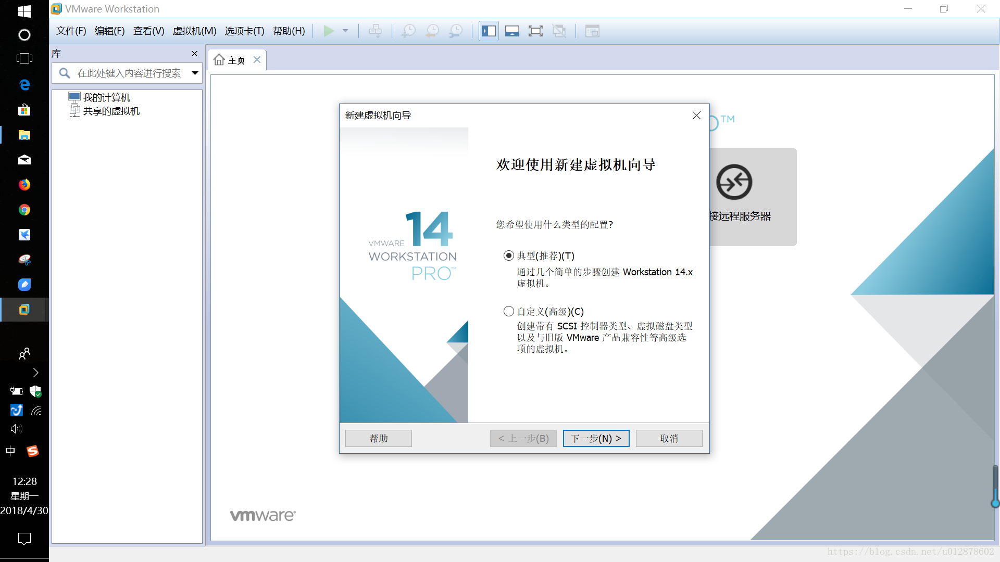
6. 选择下载好的Fedora的安装光盘ISO文件 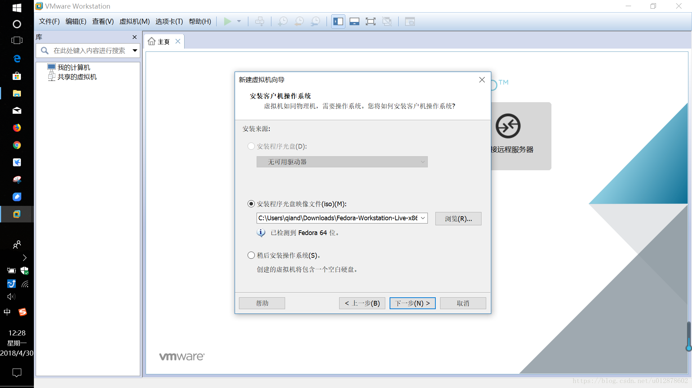
7. 设置虚拟机的磁盘容量（根据个人磁盘大小设置） 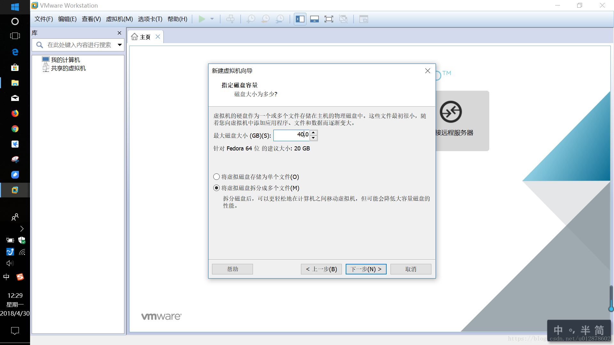
8. 完成虚拟机新建（根据个人自定义硬件） 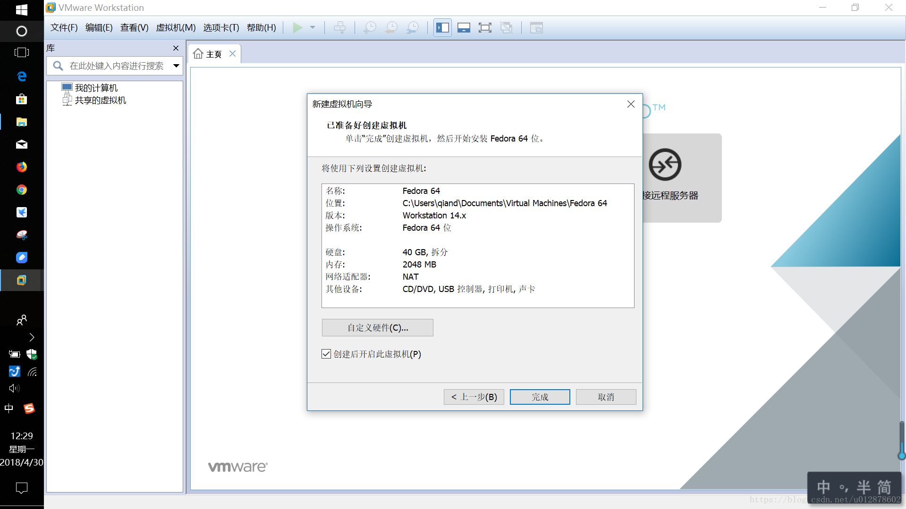
9. 安装Fedora系统 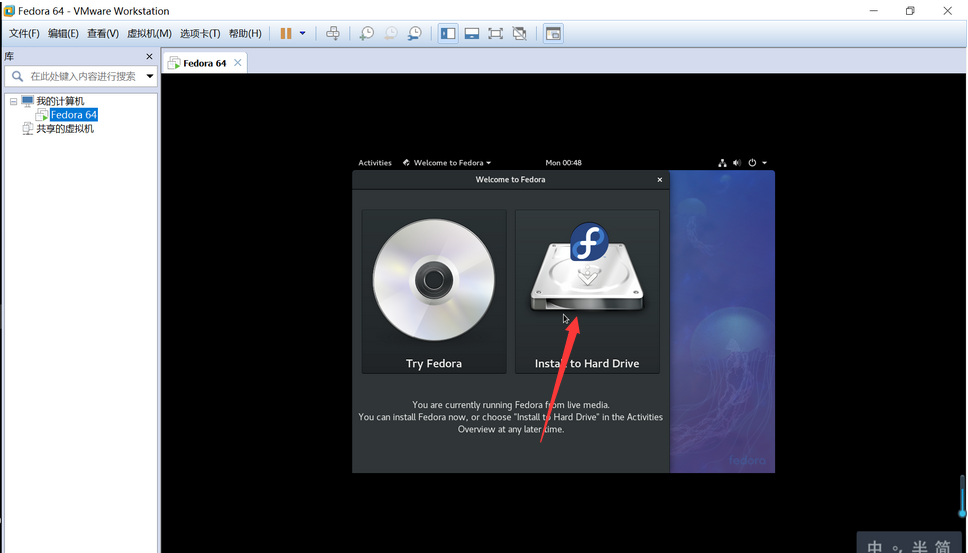
10. 选择语言 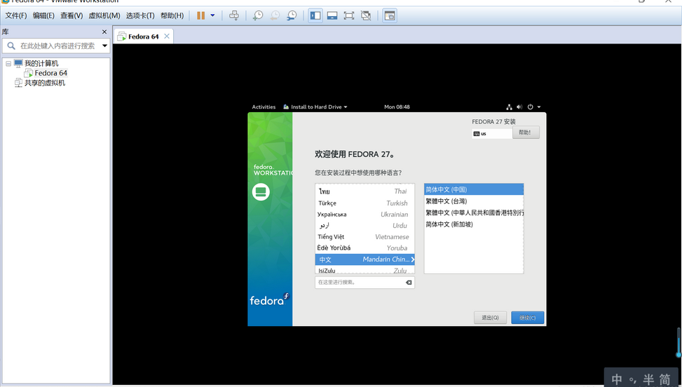
11. 系统设置，这里如果出现警告图标，表示没有设置成功，可以点击进去进行调整。 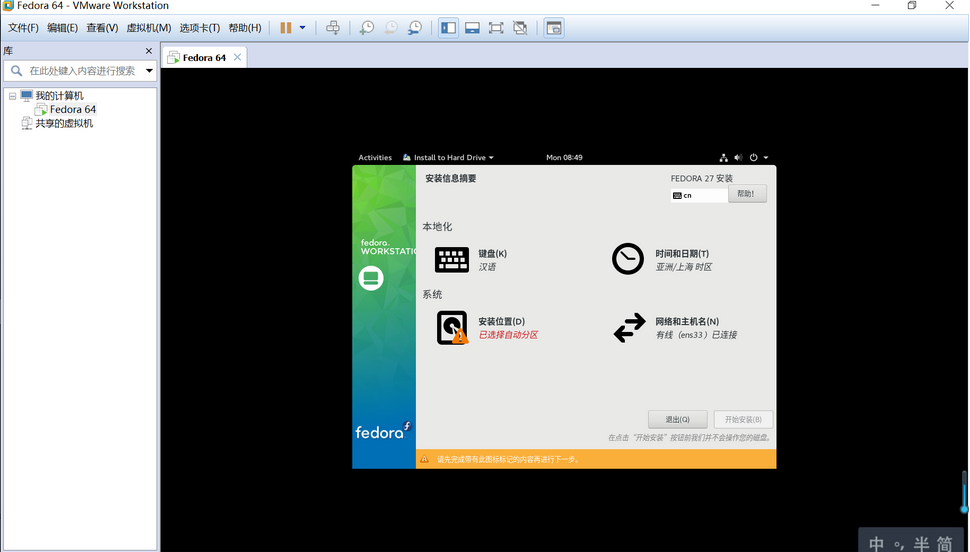
12. 点击“开始安装”之后，会进入该界面，可以设置账户的信息。 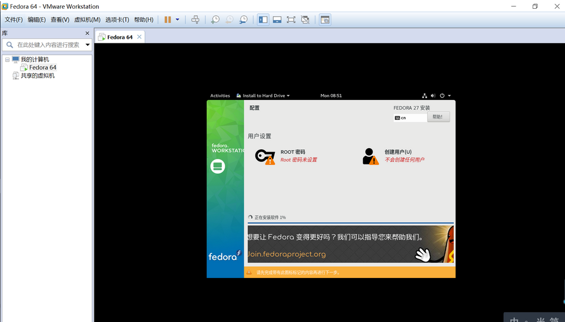
13. 设置成功之后，如图所示 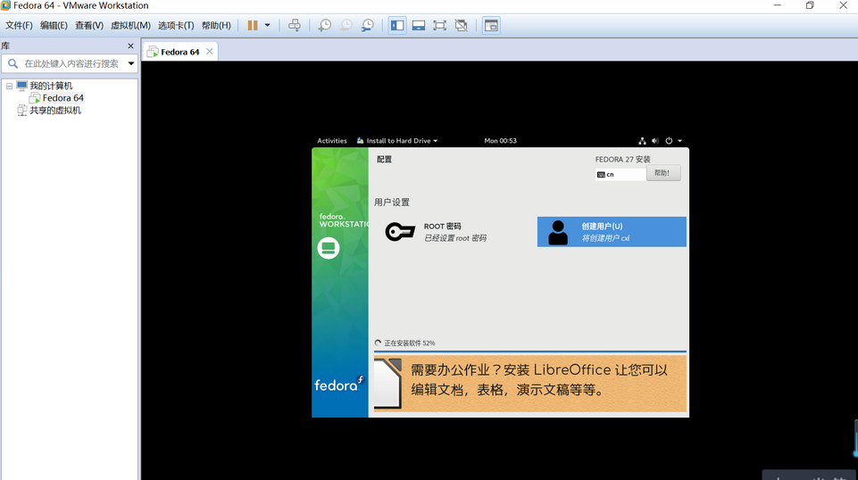
14. 安装完成。 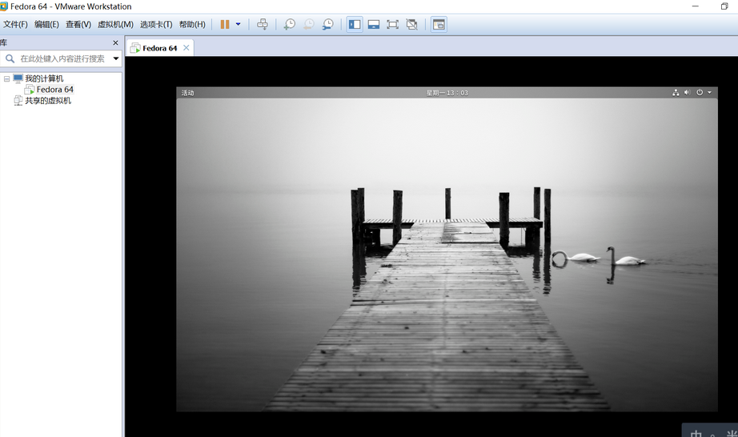
15. 更新系统，打开终端切换到root权限，输入dnf update && dnf upgrade。 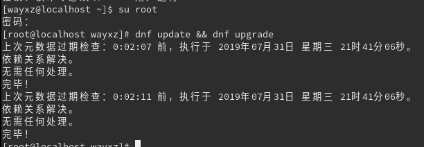
dnf的用法可以参考博客
二、PHP+nginx+mysql环境搭建 1、搭建mysql环境 1.1、前往官网下载 系统对应的MySQL Community Server安装包
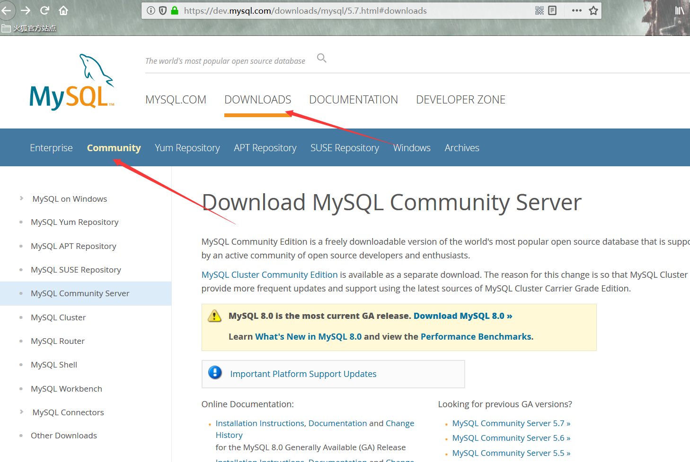
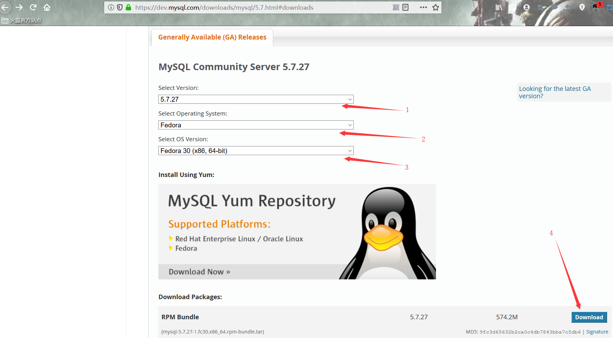
1.2、 解压mysql-5.7.27-1.fc30.x86_64.rpm-bundle.tar
1 tar -xvf mysql-5.7.27-1.fc30.x86_64.rpm-bundle.tar
1.3、安装mysql，安装顺序如下:
1 2 3 4 dnf install mysql-community-common-5.7.27-1.fc30.x86_64.rpm dnf install mysql-community-libs-5.7.27-1.fc30.x86_64.rpm dnf install mysql-community-client-5.7.27-1.fc30.x86_64.rpm dnf install mysql-community-server-5.7.27-1.fc30.x86_64.rpm
1.4、 初始化数据库
1 mysqld --initialize --user=mysql --basedir=/usr/mysql --datadir=/usr/mysql/data
1.5、启动数据库
1 systemctl start mysqld.service
1.6、查找初始密码
1 grep 'temporary password' /var/log/mysqld.log
1.7、修改root密码
1 2 ALTER USER 'root'@'localhost' IDENTIFIED BY 'root'; flush privileges;
2、搭建nginx环境 2.1、 利用dnf安装nginx。
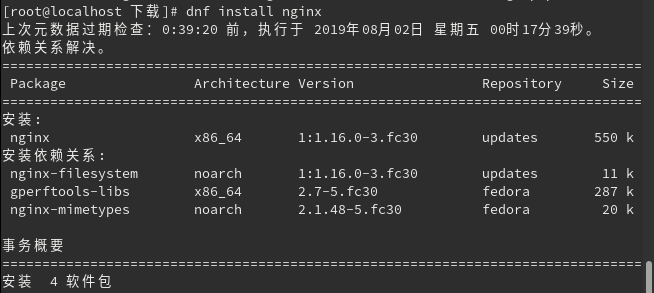
2.2、安装完nginx后启动nginx的服务。
1 2 systemctl start nginx systemctl enable nginx
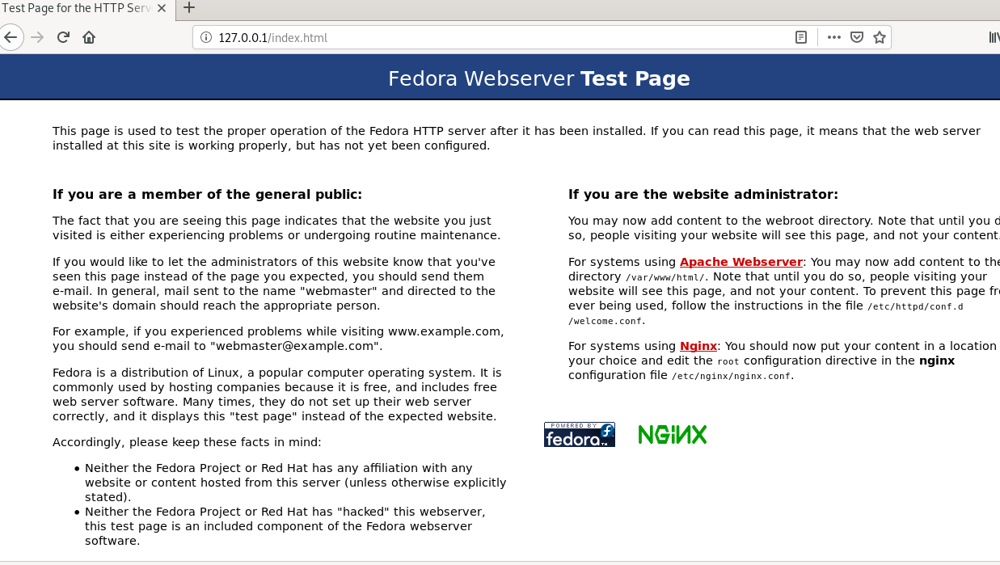
输入127.0.0.1弹出窗口安装成功。
2.3、修改/etc/nginx/default.d/php.conf文件，配置nginx解析php（未配置会出现无法解析PHP，运行php文件会弹出下载文件窗口），然后重启nginx。
3、搭建php环境 3.1、切换到root环境下利用dnf 安装PHP
1 2 dnf install php dnf install php-mysqlnd
3.2、配置/etc/php-fpm.d/www.conf ,查找修改listen = /run/php-fpm/www.sock为listen =127.0.0.1:9000(指定php-fpm监听本地的9000端口)
3.3、指定php-fpm的运行用户为nginx，配置/etc/php-fpm.d/www.conf 参数user = nginx ，group=nginx 。
3.4、启动php-fpm
1 2 systemctl start php-fpm systemctl enable php-fpm
4、数据库连接测试 4.1、连接数据库。
1 2 3 4 5 6 7 8 9 10 11 12 13 <?php $servername = "localhost" ; $username = "root" ; $password = "root" ; $conn = new mysqli($servername,$username,$password); if ($conn){ echo "连接成功" ; } if ($conn -> connect_errno){ die ("连接失败：" .$conn -> connect_error); } ?>
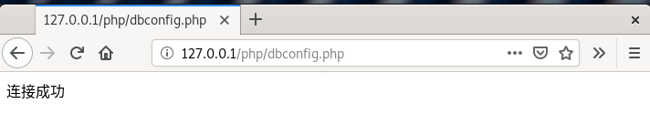
4.2、创建数据库
1 2 3 4 5 6 7 8 9 10 11 <?php require "dbconfig.php" ;$sql = "CREATE DATABASE myTestDB" ; if ($conn -> query($sql) ===true ){ echo "数据库创建成功" ; }else { echo "数据库创建失败" .$conn ->error; } $conn -> close(); ?>
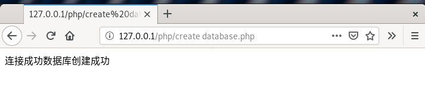
4.3、创建表
1 2 3 4 5 6 7 8 9 10 11 12 13 14 15 16 17 18 19 20 21 22 23 24 25 <?php require "dbconfig.php" ;$db ="myTestDB" ; $conn = new mysqli($servername, $username, $password, $db); if ($conn->connect_error) { die ("连接失败: " . $conn->connect_error); } $sql = "CREATE TABLE MyTestTables ( id INT(6) UNSIGNED AUTO_INCREMENT PRIMARY KEY, firstname VARCHAR(30) NOT NULL, lastname VARCHAR(30) NOT NULL, email VARCHAR(50), reg_date TIMESTAMP )" ;if ($conn->query($sql) === TRUE ) { echo "测试表创建成功" ; } else { echo "创建数据表错误: " . $conn->error; } $conn->close(); ?>
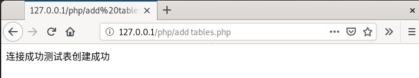
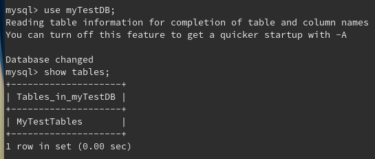
4.4、插入数据
1 2 3 4 5 6 7 8 9 10 11 12 13 14 15 16 17 18 19 20 21 22 <?php require "dbconfig.php" ;$db ="myTestDB" ; $conn = new mysqli($servername, $username, $password, $db); if ($conn->connect_error) { die ("连接失败: " . $conn->connect_error); } $sql = "INSERT INTO MyTestTables (firstname, lastname, email) VALUES ('test1', 'test1', 'test1@example.com');" ;$sql .= "INSERT INTO MyTestTables (firstname, lastname, email) VALUES ('test2', 'test2', 'test2@example.com');" ;$sql .= "INSERT INTO MyTestTables (firstname, lastname, email) VALUES ('test3', 'test3', 'test3@example.com')" ;if ($conn->multi_query($sql) === TRUE ) { echo "新记录插入成功" ; } else { echo "Error: " . $sql . "<br>" . $conn->error; } $conn->close();
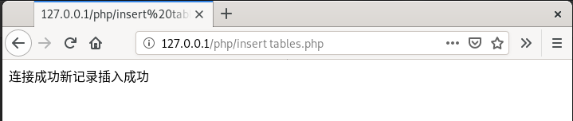
4.5、查询插入数据
1 2 3 4 5 6 7 8 9 10 11 12 13 14 15 16 17 18 19 20 21 22 <?php require "dbconfig.php" ;$db ="myTestDB" ; $conn = new mysqli($servername, $username, $password, $db); if ($conn->connect_error) { die ("连接失败: " . $conn->connect_error); } $sql = "SELECT id, firstname, lastname FROM MyTestTables" ; $result = $conn->query($sql); if ($result->num_rows > 0 ) { while ($row = $result->fetch_assoc()) { echo "id: " . $row["id" ]. " - Name: " . $row["firstname" ]. " " . $row["lastname" ]. "<br>" ; } } else { echo "0 结果" ; } $conn->close(); ?>
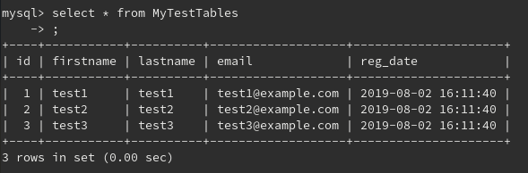
4.6、删除某条数据。
1 2 3 4 5 6 7 8 9 10 11 12 13 14 15 16 <?php require "dbconfig.php" ;$db ="myTestDB" ; $conn = new mysqli($servername, $username, $password, $db); if ($conn->connect_error) { die ("连接失败: " . $conn->connect_error); } $result=mysqli_query($conn,"DELETE FROM MyTestTables WHERE LastName='test1'" ); if ($result){ echo "删除test1成功" ; } mysqli_close($conn); ?>
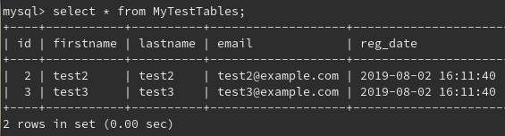
三、安全加固思考 1、主机加固 1.1、限制远程访问地址，配置hosts.allow和hosts.deny。
1 2 3 4 5 6 vim /etc/hosts.deny //配置hosts.deny sshd:all //配置内容，限制拒绝所有的ssh远程连接 --------------------------------------- vim /etc/hosts.allow //配置hosts.allow sshd:192.168.3.10 //配置内容，设置允许远程的IP
1.2、设置登录口令策略
1 2 3 4 5 6 7 8 9 10 vim /etc/login.defs PASS_MAX_DAYS 90（可选） #密码最长使用天数90天 PASS_MIN_DAYS 1 #密码最短使用天数 PASS_WARN_AGE 28 #密码到期提前提醒天数 PASS_MIN_LEN 8 #密码最小长度为8 vim /etc/pam.d/system-auth auth required pam_tally2.so onerr=fail deny=5 unlock_time=180 password requisite pam_cracklib.so retry=5 difok=3 minlen=8 ucredit=-1 lcredit=-1 dcredit=-1 ocredit=-1
1.3、设置主机超时时间
1 2 3 vim /etc/profile export TMOUT=600 //设置系统远程超时时间为600秒
1.4、限制远程root用户登录
1 2 vi /etc/ssh/sshd_config 找到并修改PermitRootLogin为no
这些密码策略在一定程度上防止了ssh远程登录爆破，远程登录限制防止账号密码泄露后权限过大远程造成的破坏。
2、mysql加固 2.1、更改数据库root弱口令
1 2 3 4 5 mysql> use mysql; mysql> update user set password=password('Wayxz@2019_’) where user='root'; //修改root用户口令，删除空口令； mysql> update user set user="wayxz" where user="root"; //改变默认mysql管理员帐号； mysql> update user set host =’localhost’ where user = "newroot"; //禁止管理员帐号远程登录 mysql> flush privileges;
2.2、收回File，Grant，Reload，Shutdown，Process等权限;
1 2 mysql>revoke file，grant，reload，shutdown，process from user; mysql> flush privileges;
2.3、在mysqld配置文件中修改默认的port：3306 为port：33060
2.4、采用mysql权限运行mysql数据库
1 2 3 #vim /etc/my.cnf [mysqld] user=mysql
2.5、限制连接用户的数量
1 2 3 #vim /etc/my.cnf [mysqld] max_user_connections= 2
这些策略在一定程度上防止了数据库端口扫描，弱口令引起的安全漏洞，防止权限过大导致的安全隐患。
3、php环境加固 3.1、启用 PHP 的安全模式
修改 php.ini 配置文件启用 PHP 安全模式：safe_mode = on //对文件操作函数进行权限控制，同时不允许对某些关键文件进行修改（例如 /etc/passwd）
safe_mode_gid = off //如果不进行该设置，可能无法对服务器网站目录下的文件进行操作。
open_basedir = /usr/share/nginx/www //使用open_basedir选项能够控制 PHP 脚本只能访问指定的目录，这样能够避免 PHP 脚本访问不应该访问的文件
expose_php = off //关闭 PHP 版本信息在 HTTP 头中的泄露
magic_quotes_gpc = on //PHP 将自动把用户提交对 SQL 查询的请求进行转换（例如，把 ’ 转换为 \’ 等)
启用php自身的安全模式能避免网站执行一些类似eval 危险的函数，避免了非法文件读取操作，避免小部分的数据库注入。
4、nginx加固 4.1、给网站根目录搞了一个只读的挂载点。这里网站根目录为/user/share/nginx/html
1 2 3 mkdir -p /data mount --bind /data /user/share/nginx/html mount -o remount,ro --bind /data /user/share/nginx/html
网站内容实际位于/data，网站内容更新就往/data里更新，目录/user/share/nginx/html无法执行任何写操作，否则会报错“Read-only file system”，极大程度上可以防止提权篡改。